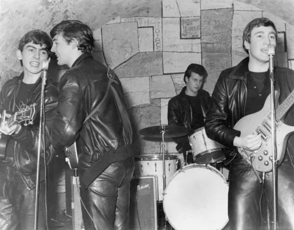
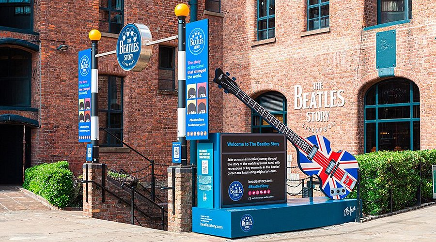
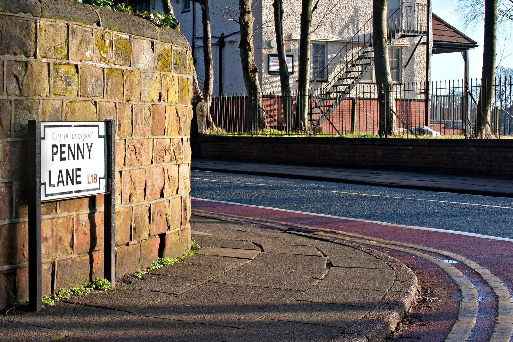
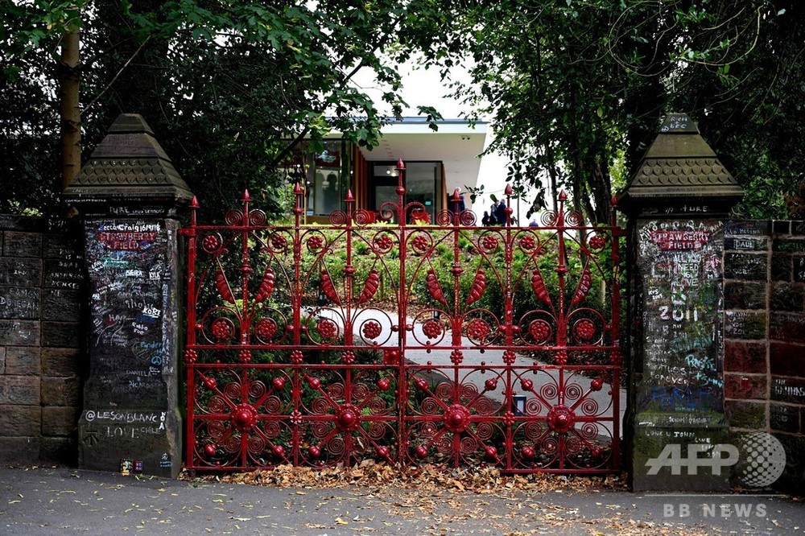
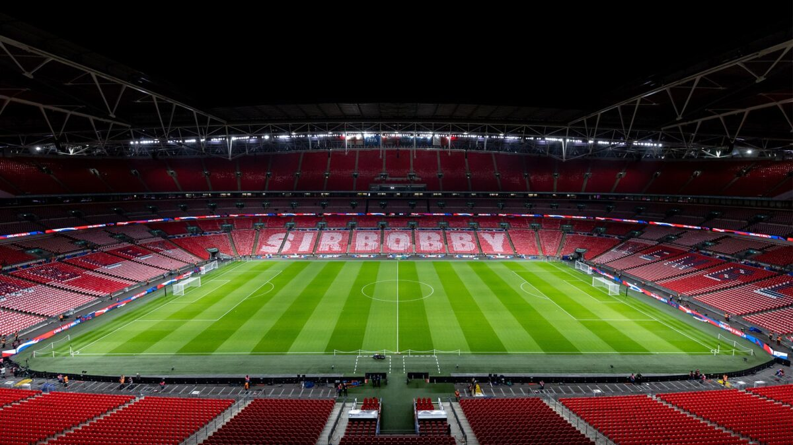
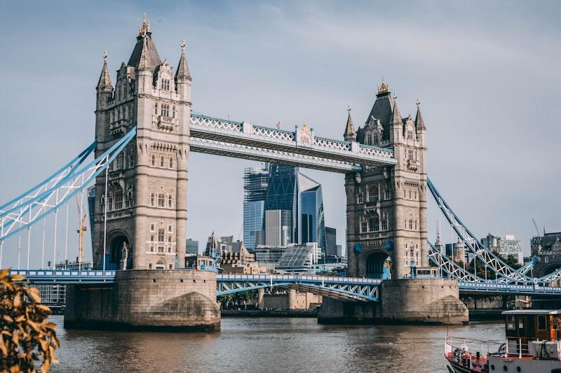
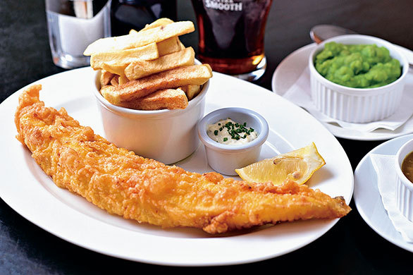
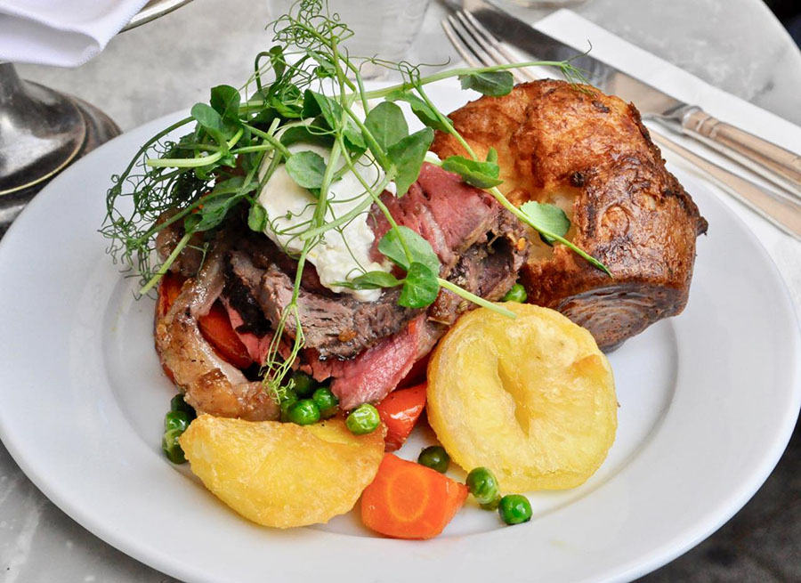

観光スポット
🇬🇧 リバプール ― ビートルズの聖地 お父さん必見！

キャバーン・クラブ
ビートルズが1961年から1963年にかけて292回もの公演を行った伝説のライブハウス。現在も生演奏を楽しめます。
ホテルから徒歩5分 11:00〜深夜

ビートルズ・ストーリー
世界最大のビートルズ博物館。彼らの生い立ちからアビーロードまで、貴重な展示物とともにビートルズの歴史を体験できます。
アルバート・ドック内 大人 £19〜

ペニー・レーン
名曲「Penny Lane」の舞台となった通り。道路標識との記念撮影スポット。バスツアーで訪れるのがおすすめ。
マジカル・ミステリー・ツアー

ストロベリー・フィールド
ジョン・レノンが幼少期に遊んだ場所で、名曲「Strawberry Fields Forever」のインスピレーション源。現在は展示施設として公開。
大人 £14.50🇬🇧 ロンドン

ウェンブリースタジアム
収容人数約9万人を誇るイングランドの聖地。3/31の日本vsイングランド戦はここで開催されます。
Jubilee線 Wembley Park駅 試合日！
アビーロード
ビートルズの有名なアルバムジャケットで知られる横断歩道。世界中からファンが訪れる聖地。
St John's Wood駅 徒歩5分
ビッグベン・国会議事堂
ロンドンのシンボル。テムズ川沿いにそびえる時計塔と壮大なゴシック建築の議事堂。
Westminster駅すぐ

タワーブリッジ
1894年完成の跳ね橋。上部の歩道橋からはテムズ川とロンドン市街を一望できます。
Tower Hill駅 徒歩5分 展望 £12.30ロンドンのおすすめグルメ

フィッシュ＆チップス
イギリスの国民食！

サンデーロースト
伝統的な日曜ランチ
🇩🇪 ミュンヘン

マリエン広場・新市庁舎
ミュンヘンの中心地。ゴシック様式の新市庁舎とからくり時計は必見。11時と12時に仕掛けが動きます。
Marienplatz駅すぐホフブロイハウス
1589年創業の世界最大級のビアホール。バイエルン料理と本場のビールを楽しめます。
🍺 おすすめビール
- ホフブロイ・オリジナル（ラガー）
- ヴァイスビア（白ビール）
- ドゥンケル（黒ビール）